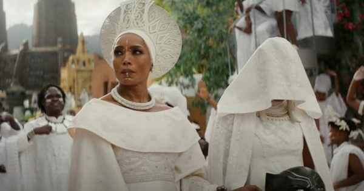
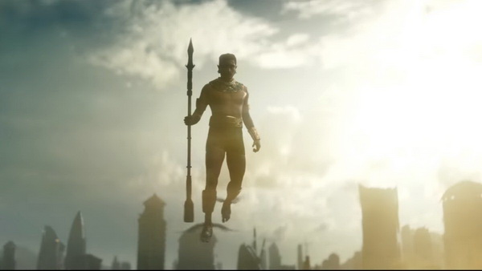
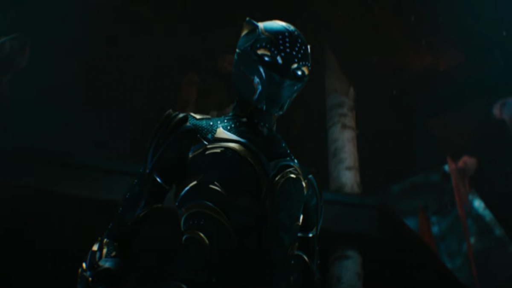
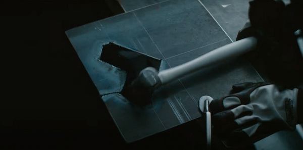

Black Panther Wakanda Forever: Bóc Tách Trailer Mới Nhất!
Trong lúc công chúng còn đang xỉu lên xỉu xuống vì Hugh Jackman trở lại diễn Wolverine, Marvel quyết định “không cho khán giả thở” bằng cách tung nốt trailer Black Panther: Wakanda Forever – tác phẩm kết thúc giai đoạn 4 của vũ trụ điện ảnh. Hãy cùng phân tích thước phim mới hé lộ điều gì. Tuy nhiên, xin cảnh báo rằng, đừng tin những gì trailer Marvel nói!
Tang lễ T’Challa / Black Panther
Không còn nghi ngờ gì nữa, hình ảnh ấn tượng toàn thế giới từ teaser chính là tang lễ T’Challa. Nữ hoàng Ramonda nắm tay công chúa Shuri, trên tay cô cầm chiếc mũ của Báo Đen. Đạo diễn kiêm biên kịch Ryan Coogler đã tiết lộ Black Panther: Wakanda Forever dành tri ân Chadwick Boseman
Namor, ngai vàng và Shuri
Xen giữa cảnh đám tang Black Panther là hình ảnh Namor (Tenoch Huerta). “Chỉ có những người đau khổ nhất, mới có thể trở thành thủ lĩnh vĩ đại.” Sau đó, Namor ngồi lên ngai vàng răng cá mập. Huerta mới đây đã xác nhận Namor là dị nhân.
Đáng chú ý, người xuất hiện cùng Namor trong cảnh này ở phía Wakanda là Shuri. Đây là điềm báo nàng công chúa sẽ lên ngôi, kế tục anh trai, làm thủ lĩnh Wakanda cũng như Black Panther mới?
Nguồn gốc Namor
Marvel đổi nguồn gốc Namor từ hoàng tử Atlantis thành người thống trị Talocan. M’Baku dành hẳn đoạn thoại dài để kể cho thuộc hạ nghe rằng kẻ đứng đầu Talocan đáng sợ cỡ nào. “Dân của hắn không gọi hắn là tướng quân hay vua. Họ gọi hắn là K'uk'ulkan – Thần Rắn Có Lông Vũ. Giết hắn sẽ có rủi ro chiến tranh vĩnh viễn.”
Nhiều khả năng, kẻ khơi mào cuộc chiến giữa hai bên là Namor. Một thành viên Dora Milaje đã thốt lên: “Hắn đang đến thế giới mặt đất.” Ở cảnh khác, Namor đối diện với nữ hoàng Ramonda, phía sau bà là ngai vàng Wakanda. Hắn chuẩn bị phá cửa xông vào. Sau đó, nước đổ về Wakanda, người dân phải cố gắng chống chọi. Đây là tình tiết lấy từ tuyến truyện
Black Panther mới là ai?
Sau cánh tay ở teaser, Black Panther mới đã hoàn toàn lộ diện. Bộ trang phục thể hiện rõ đây là phụ nữ. Dĩ nhiên, người có khả năng cao nhất đứng đằng sau lớp vỏ chiến binh Báo Đen là công chúa Shuri. Trên mặt nạ nhấn nhá dấu màu trắng, tương tự với vẻ ngoài của cô trước đây (Black Panther 2018). Hầu hết các chi tiết đều đang hướng tới việc Black Panther mới là Shuri
Cùng lúc việc trailer được tung ra, Marvel hé lộ thêm vài tấm poster mới vô cùng ấn tượng. Điểm chung là Shuri luôn ở vị trí trung tâm hoặc nổi bật hơn hẳn những nhân vật khác. Điều này càng khẳng định thêm việc Letitia Wright sẽ thay thế vai trò Chadwick Boseman để lại. Thế nhưng, vẫn như mọi khi, hãy tỉnh táo trước trailer nhà Marvel. Chúng ta đã ăn quá đủ các cú lừa “trailer một đằng, phim một nẻo” (điển hình nhất dĩ nhiên là chàng Nhện photoshop). Thế nên, cũng có khả năng đó là Okoye, Nakia hay biết đâu là nữ hoàng Ramonda; hoặc Shuri khoác lên người lớp giáp Black Panther thay thế anh trai trong thời gian ngắn.
Wakanda phản công
Giọng nữ hoàng Ramonda quả quyết: “Chúng tôi biết các vị thì thầm những gì. Bọn họ đã mất người bảo vệ. Giờ là lúc chúng ta tấn công.” Wakanda không phải vương quốc “dễ xơi”. Họ từng đứng vững trước cuộc tấn công trước cuộc tấn công của Thanos và thuộc hạ. (Dĩ nhiên, các siêu anh hùng Avengers góp sức rất lớn). .
Chưa biết Namor có liên quan đến việc T’Challa từ trần chăng nhưng Namor dám “quậy” tung nóc Wakanda thì nữ vương Ramonda và thần dân sẽ đáp trả gấp bội. Vị nữ vương bình thường, không tấc sắt trong tay vẫn can đảm đối mặt với Thần Rắn Có Lông Vũ và “Cho họ thấy chúng ta là ai!”.
Ironheart
Đã tiết lộ từ teaser, Riri Williams (Dominique Thorne) là Ironheart. Phân đoạn ấy dường như được lấy cảm hứng từ cảnh Tony Stark rèn áo giáp ở Iron Man (2008). Trong trailer mới, Ironheart bay lượn trên không, chắc chắn cô bé sẽ là nhân tố quan trọng bảo vệ Wakanda trước Namor. Dù chưa tiết lộ gì nhiều, đây là nhân vật chắc chắn sống sót qua cuộc chiến này. Dominique Thorne có phim riêng Ironheart trên Disney+.
X-Men có xuất hiện không?
Black Panther: Wakanda Forever là phim chiếu rạp khép lại giai đoạn 4 MCU. Dù vướng vài lí do khách quan như đại dịch Covid-19, khó thể phủ nhận việc vũ trụ điện ảnh Marvel đang nhận hàng loạt chỉ trích liên quan đến chất lượng tác phẩm. Một cú huých cho “trận chiến cuối cùng” là cần thiết.
Nếu mutant Namor đã xuất hiện, liệu hãng dám “chơi lớn” hé lộ Dị Nhân nhà Fox trở về? Vẫn còn nhiều điều trailer Black Panther: Wakanda Forever từ chối tiết lộ. Đó là số phận W'Kabi (Daniel Kaluuya phải bỏ vai do xung đột lịch trình), vai trò của Everett K. Ross (Martin Freeman) hay đồn đoán liên quan Nakia (Lupita Nyong'o)… Dĩ nhiên, cũng có hàng tá cảnh đáng cho chúng ta đặt dấu hỏi là thật hay chỉ là cú lừa từ hãng.
Black Panther: Wankanda Forever ra mắt tại các rạp chiếu phim từ 10.11.2022. Hãy cùng chờ xem Marvel sẽ tung bài nào để kết thúc phase 4 thật hoành tráng!